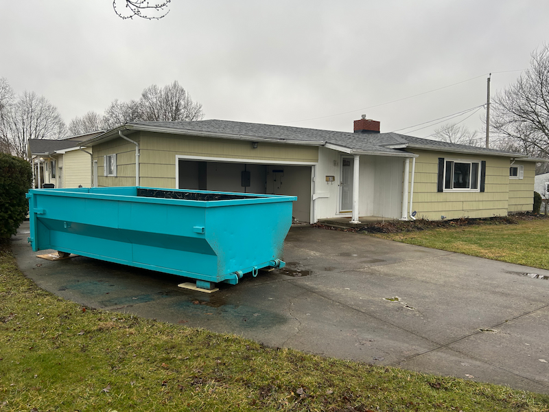

Roofing Dumpster Rental for Contractors in Columbus: What You Need to Know
Roofing contractors need dumpsters that can handle heavy shingle loads without surprise overage fees. Here's how to calculate weight, protect driveways, and get same-day delivery in Columbus.

Last month, I got a call from a roofing contractor in Powell who'd just finished a tear-off on a 2,200 square-foot colonial. Two layers of shingles, loaded into a competitor's 20-yard dumpster. The debris barely filled half the container—but when the hauler came to pick it up, they hit him with a $420 overage fee for going 3.5 tons over the weight limit.
"I've been roofing for fifteen years," he told me when he called to book his next job with us. "I thought a bigger dumpster meant more weight capacity. Turns out I paid for a bunch of empty space I didn't need, and still got hammered on weight."
This happens constantly with roofing jobs. Contractors assume dumpster size equals weight capacity, or they don't realize just how heavy asphalt shingles are compared to other construction debris. A half-full dumpster can easily exceed weight limits because shingles are incredibly dense—and that's when the surprise fees start piling up.
I've been delivering dumpsters to roofing contractors across Dublin, Hilliard, Powell, and the surrounding Columbus area for years. Roofing debris is one of the trickiest types of waste to estimate because the weight-to-volume ratio is so different from what most people expect. But once you understand how to calculate it correctly and what to watch for, roofing jobs become some of the most straightforward dumpster rentals you can book.
Here's everything contractors need to know about renting dumpsters for roofing projects in Columbus—from calculating shingle weight to protecting driveways to getting same-day delivery when you need to start immediately.
Why Roofing Debris Is Different: The Weight Problem
If you've been in the roofing business for any length of time, you already know that asphalt shingles are heavy. But let me put some numbers to it so you can see exactly why this matters for dumpster rentals.
A typical bundle of architectural shingles weighs 65-80 pounds. Standard three-tab shingles are slightly lighter at 50-65 pounds per bundle. You need about 3 bundles per square (100 square feet of roof area), which means:
- One square of architectural shingles weighs approximately 210-240 pounds when new
- Add 10-15% for old shingles (moisture absorption, dirt, granule buildup over decades)
- Double or triple that for multi-layer tear-offs (most older homes have at least two layers)
Here's a real-world example: A 2,000 square-foot home with a standard roof pitch translates to roughly 22 squares of actual roof surface area when you account for pitch, overhang, and waste. If you're tearing off two layers of architectural shingles:
22 squares × 2 layers = 44 squares total
44 squares × 240 lbs per square = 10,560 lbs
Add 10% for old shingle weight = 11,616 lbs
Total: 5.8 tons of shingle debris
That's nearly 6 tons of material from a fairly average-sized roof. And it gets worse if you're dealing with three layers (common on homes built before the 1990s when codes were more lenient) or larger homes.
The problem is that all those shingles don't take up much volume. Shingles are flat, they layer densely, and they compact as you load them. You might think you need a massive dumpster to handle a whole roof, but the reality is that a 14-yard dumpster can hold the shingles from most residential tear-offs—if the weight is managed correctly.
Volume vs. Weight: Why Bigger Isn't Always Better
This is where contractors run into trouble. You see a 20-yard or 30-yard dumpster and think, "That's plenty of space for this roof." And you're right—it is plenty of space. The problem is that you'll hit the weight limit long before you fill the container.
Most dumpster companies include a weight allowance with each rental. For our 14-yard dumpsters, you get 2 tons (4,000 lbs) included in the base price of $319. Anything over that is charged at $0.03 per pound, which works out to $60 per ton over the limit.
Let's go back to that 2,000 square-foot home with two layers of shingles (5.8 tons total). If you load all that debris into one dumpster:
- Base rental: $319 (includes 2 tons)
- Overage: 3.8 tons × $60/ton = $228
- Total cost: $547
Now, you could try to rent a larger dumpster from a competitor hoping for a higher weight allowance. Some 20-yard dumpsters include 3-4 tons. But here's what I've learned from working with hundreds of roofing contractors: the larger dumpsters cost significantly more upfront, and you still end up paying overage fees if you're not careful about the math.
A better approach? Calculate the weight before you book, and decide whether you need one dumpster or two based on tonnage, not volume.
How to Calculate Shingle Weight for Your Job
Calculating shingle weight doesn't have to be complicated. You just need to know three things:
- The square footage of the home's footprint (not the roof itself—we'll adjust for that)
- How many layers of shingles you're removing
- What type of shingles they are (three-tab or architectural)
Here's the step-by-step process I use when contractors call to book:
Step 1: Estimate Roof Squares
Take the home's footprint square footage and multiply by 1.1 for a simple gable roof (standard pitch) or 1.15-1.2 for a steeper/more complex roof. Then divide by 100 to get "squares."
Example: 2,400 sq ft home with standard pitch
2,400 × 1.1 = 2,640 sq ft of roof surface
2,640 ÷ 100 = 26.4 squares (round up to 27)
Step 2: Multiply by Number of Layers
If you're tearing off two layers, multiply your square count by 2. For three layers, multiply by 3. Most homes in the Columbus area have 1-2 layers, but older homes—especially in neighborhoods like Clintonville, German Village, or parts of Dublin—sometimes have three.
Example: 27 squares × 2 layers = 54 squares total
Step 3: Calculate Weight
Use these weights per square:
- Three-tab shingles: 200 lbs per square (old material)
- Architectural shingles: 250 lbs per square (old material)
Multiply your total squares by the weight per square, then add 10% for dirt, moisture, and debris.
Example: 54 squares × 250 lbs = 13,500 lbs
Add 10%: 13,500 × 1.1 = 14,850 lbs
Total: 7.4 tons
Step 4: Determine How Many Dumpsters You Need
Our 14-yard dumpsters include 2 tons in the base price. Anything over that is $60/ton. Here's how I'd approach the example above (7.4 tons):
Base rental: $319 (includes 2 tons)
Overage: 5.4 tons × $60 = $324
Total: $643
Option 2: Two Dumpsters
Two rentals: $319 × 2 = $638
7.4 tons ÷ 2 = 3.7 tons per dumpster
Overage per dumpster: 1.7 tons × $60 = $102
Total overage: $102 × 2 = $204
Total: $802
In this case, one dumpster is more cost-effective even with the overage fee. But if you were at 8+ tons, two dumpsters might make sense. The breakeven point depends on your specific tonnage, and I'm always happy to run the numbers with you over the phone before you book.
Call me at (614) 636-2343 and I'll walk you through the math for your specific job. It takes two minutes, and it can save you hundreds of dollars in surprise fees.
What About Metal Roofing, Tile, or Slate?
Most of the roofing work in Central Ohio involves asphalt shingles—probably 95% of the jobs I see. But occasionally I work with contractors handling metal roofs, clay tile, or even slate.
Metal Roofing
Metal roofing is significantly lighter than asphalt shingles. A square of metal roofing typically weighs 40-80 pounds compared to 200-250 pounds for asphalt. If you're tearing off a metal roof, you'll have no problem staying under the 2-ton weight limit on a single dumpster for most residential jobs.
The challenge with metal roofing isn't weight—it's volume and shape. Metal panels are bulky and don't compact well. You might need a larger container just to fit everything, even though the weight is manageable. If you're doing a metal roof tear-off, give me a call and we'll discuss whether a 14-yard will work or if you need to look at alternatives.
Clay Tile and Slate
On the opposite end, clay tile and slate are extremely heavy. A square of clay tile can weigh 600-1,000 pounds. Slate is even worse at 800-1,500 pounds per square. These materials are so heavy that you'll need multiple dumpsters even for small roofs, and you'll be paying overage fees on nearly every load.
I don't see many tile or slate tear-offs in the Columbus area—these roofs are mostly limited to high-end homes in places like Upper Arlington or Dublin, and even then, they're rare. If you're working on one of these jobs, let's have a conversation about the best approach. You might be better off working with a specialty hauler who can handle the extreme weight more efficiently.
The Driveway Protection Problem
Here's something a lot of roofing contractors don't think about until it's too late: a 14-yard dumpster loaded with 5-6 tons of shingles puts enormous pressure on the driveway underneath it.
Asphalt driveways are especially vulnerable. The combination of a heavy container, a heavy load, and the weight concentrated on the dumpster's steel feet can crack asphalt, leave permanent divots, or even cause sections of the driveway to sink or buckle.
I've seen this happen more times than I can count. The roofing crew finishes the job, we haul away the dumpster, and the homeowner comes outside to find two deep impressions in their driveway where the container sat. Now you're dealing with an angry customer, potential repair costs, and damage to your reputation.
How I Handle Driveway Protection
For roofing jobs specifically, I provide plywood sheets to place under the dumpster at no extra charge. This distributes the weight across a larger surface area and dramatically reduces the risk of driveway damage.
Here's what I recommend:
- Always use plywood protection on asphalt driveways, especially for roofing debris (which is always heavy)
- Consider protection on concrete driveways if they're older or show signs of cracking
- Place the dumpster as close to the street as possible to minimize pressure on the driveway and reduce the distance your crew has to haul debris
- Avoid placing dumpsters on steep slopes—the dumpster can shift or slide, especially once it's loaded with several tons of shingles
When you book with me, I'll ask about the driveway and the placement location. If I think protection is necessary, I'll bring it with the dumpster at delivery. It's one of those small details that makes a huge difference in customer satisfaction—and it keeps you from dealing with driveway repair bills after the fact.
Loading the Dumpster: Best Practices for Roofing Debris
Loading a dumpster during a roofing job should be straightforward—shingles come off the roof, they go in the container. But there are a few things that can make your life easier and help you avoid problems.
Load Evenly to Avoid Tipping
Shingles are heavy and dense. If you load all your debris on one end of the dumpster, you create an unbalanced load that's difficult (and sometimes unsafe) to haul. Spread the shingles evenly throughout the container, especially if you're loading several tons of material.
I've had contractors call me after loading 5+ tons of shingles into one end of the dumpster, and when I arrive to pick it up, the container is tilted at a dangerous angle. I can't safely haul it until they redistribute the weight, which delays pickup and adds frustration for everyone.
Break Down Larger Debris
If you're tearing off plywood decking, ridge vents, or other bulky items along with the shingles, break them down into smaller pieces before loading. Large sheets of plywood or long sections of metal flashing take up unnecessary space and make it harder to load efficiently.
Shingles compact naturally as you load them, but oversized debris creates voids and air pockets that waste space. A little extra effort breaking things down can mean the difference between needing one dumpster or two.
Don't Overfill the Container
The dumpster has a fill line—don't go over it. Overfilled containers are illegal to haul on public roads, and if I show up to pick up an overfilled dumpster, you'll need to remove material before I can take it. This delays your project and creates extra work for your crew.
If you're getting close to the fill line and you still have debris to load, call me. We can bring a second dumpster or schedule a swap if you're not quite finished with the job.
Keep Prohibited Materials Out
This is important: you cannot put hazardous materials in the dumpster. That includes:
- Roofing tar and sealants in liquid form
- Solvents or chemical products
- Propane tanks
- Batteries
- Paint cans (unless completely empty and dried out)
Shingles, plywood, metal flashing, nails, underlayment, drip edge—all of that is fine. But if you load prohibited materials into the dumpster, I'll have to stop at the landfill and sort them out before I can unload, and you'll be charged a contamination fee. It's easier (and cheaper) to just keep those items separate from the start.
Timing and Delivery for Roofing Jobs
One of the biggest advantages of working with me for roofing jobs is same-day delivery. I know roofing contractors work fast—most residential tear-offs are done in 1-2 days, and you don't want to wait around for a dumpster to show up three days after you're ready to start.
Same-Day Delivery
If you call me in the morning and you need a dumpster that afternoon, I'll make it happen. I keep my schedule flexible specifically for jobs like this, where timing is critical and delays cost you money.
Here's how it works:
- Call or text me at (614) 636-2343 as soon as you know you need a dumpster
- Give me the address and a rough idea of the roof size so I can bring the right setup
- Let me know if you need plywood protection for the driveway
- I'll confirm a delivery window (usually within a few hours)
Once the dumpster is on site, you've got it for as long as you need to finish the job—though most roofing contractors only need it for 1-2 days. When you're done loading, just call me and I'll schedule pickup. If you finish at 3 PM, I can usually pick up same-day or early the next morning.
What If You Need It Longer?
Sometimes weather delays a job, or you're working on a larger property that takes longer than expected. That's fine—I don't charge extra if you need the dumpster for a few extra days. The base rental includes a reasonable timeframe (up to a week), and I'm flexible beyond that.
If you know upfront that you'll need the dumpster for an extended period, just let me know when you book. I'll make a note and we'll work out the details.
Cost Breakdown: What You'll Actually Pay
Let's talk numbers. Here's exactly what you'll pay when you rent a dumpster from me for a roofing job:
Base Rental: $319
This includes:
- 14-yard dumpster delivered to your job site
- 2 tons (4,000 lbs) of debris included
- Up to 7 days of rental time
- Pickup and disposal when you're finished
- Plywood protection for driveway (if needed for roofing jobs)
Overage Fees: $0.03 per Pound Over 2 Tons
If your debris exceeds 4,000 lbs, you'll pay $0.03 per pound for the overage, which works out to $60 per ton.
Example: You load 6,000 lbs of shingles (3 tons total).
Overage: 2,000 lbs × $0.03 = $60
Total cost: $319 + $60 = $379
Sales Tax: 8%
Ohio requires sales tax on dumpster rentals, so add 8% to your final total.
Example continued:
Subtotal: $359
Tax: $359 × 0.08 = $28.72
Grand total: $387.72
No Hidden Fees
That's it. No fuel surcharges, no environmental fees, no delivery fees, no "administrative costs." The price you see is the price you pay—base rental plus overage (if any) plus tax.
I'll weigh the dumpster when I pick it up and send you a receipt showing the exact weight and the breakdown of charges. If you're under 2 tons, you only pay the $319 base rental plus tax. If you're over, you'll see exactly how much overage you're being charged and why.
Working with Roofing Contractors: Why I Keep It Simple
I work with a lot of roofing contractors in the Columbus area—some are one-person operations, others run crews of 5-10 people. What I've learned over the years is that contractors need three things from a dumpster rental company:
- Speed – Same-day delivery when they need to start a job immediately
- Reliability – Show up when I say I will, pick up when they're done, no surprises
- Fair pricing – Transparent costs, accurate weight charges, no hidden fees
That's what I focus on. I'm not a big national company with call centers and automated systems. When you call me, you're talking to the person who's going to deliver your dumpster. I know the Columbus area inside and out—I know which neighborhoods have narrow driveways, which streets have permit requirements, which subdivisions have HOA restrictions.
If you're working in Dublin and you need a dumpster dropped off at 7 AM before you start tearing off a roof, I'll be there. If you're finishing a job in Hilliard at 4 PM and you want it picked up before the homeowner gets home from work, I'll make it happen. That's the level of service I provide, and it's why so many contractors in the area call me first when they book a roofing job.
Frequently Asked Questions
Can I load other construction debris in with the shingles?
Yes, as long as it's not hazardous material. Plywood, metal flashing, nails, underlayment, gutters, vents—all fine. Just remember that everything counts toward your weight limit, so if you're already pushing 5-6 tons of shingles, adding a bunch of heavy lumber might put you over.
What if I don't know how many layers of shingles are on the roof?
If you're not sure, assume two layers and plan for that. It's better to overestimate slightly than to get caught off guard. You can also check the edge of the roof where shingles overhang—you'll usually be able to see the layers.
Do I need a permit to place a dumpster in the driveway?
In most Columbus-area neighborhoods, you don't need a permit if the dumpster is on private property (your customer's driveway). If you need to place it in the street or on public right-of-way, you'll need a permit from the city. I can walk you through the process if that's necessary, but most roofing jobs are straightforward driveway placements.
Can you deliver to a job site with limited access?
Probably. I drive a truck that can navigate most residential streets and driveways. If there's a concern about access (narrow driveway, low-hanging power lines, tight corners), let me know when you book and I'll come take a look before delivery. In 99% of cases, we can make it work.
What if the homeowner has an HOA?
Some HOAs have rules about dumpster placement—where it can go, how long it can stay, whether it needs to be covered. If your customer lives in an HOA-controlled neighborhood, ask them to check the rules before you book. Most HOAs are fine with temporary dumpsters for roofing projects as long as they're not left out for weeks on end.
Why Roofing Contractors Choose Streamline Dumpsters
This business is my life. I'm not a regional manager at a national company, I'm not running a call center, I'm not outsourcing deliveries to subcontractors. When you call me, you're talking to the guy who owns the truck and delivers the dumpsters. That means I care about every job, every delivery, every customer relationship.
For roofing contractors specifically, that matters because your reputation is on the line every time you take a job. If the dumpster doesn't show up on time, the homeowner blames you. If the driveway gets damaged, you're the one dealing with the fallout. If there's a surprise overage fee because the dumpster company didn't explain weight limits clearly, it reflects poorly on you.
I don't want any of that to happen. I want your jobs to go smoothly, your customers to be happy, and your costs to be predictable. That's why I provide same-day delivery, transparent pricing, plywood protection for driveways, and honest advice about weight calculations before you book.
If you're a roofing contractor working in Dublin, Powell, Hilliard, Worthington, Plain City, or anywhere in the Columbus area, I'd love to work with you. Call me at (614) 636-2343 or shoot me a text—I'll walk you through the numbers for your specific job and we'll figure out the best approach together.
Ready to Book Your Roofing Dumpster?
If you've got a roof tear-off coming up and you need a dumpster that can handle the weight without surprise fees, let's talk. I'll help you calculate the tonnage, determine how many dumpsters you need, and get you set up with same-day delivery if you're ready to start right away.
Call or text: (614) 636-2343
Email: admin@sl-dumpsters.com
Or book online: Book Your Dumpster Now
Thanks for reading, and I look forward to working with you on your next project.
— Eli Weinstein
Owner, Streamline Dumpsters Ltd
Related Articles
- How to Maximize Space in Your Dumpster Rental: Loading Tips for Columbus Projects – Learn the #1 loading mistake that costs homeowners hundreds in extra fees.
- Dumpster Rental for Home Renovations in Columbus: A Contractor's Perspective – Everything you need to know about dumpster rentals for renovation projects.
- Winter Dumpster Rental in Columbus: How to Handle Ice, Snow & Stay Safe – Essential cold-weather tips for contractors working through the winter months.
Need a Dumpster for Your Roofing Project?
Same-day delivery available throughout Central Ohio. Transparent pricing, no hidden fees, and expert guidance on weight calculations.
Book Your Dumpster NowOr call us directly: (614) 636-2343